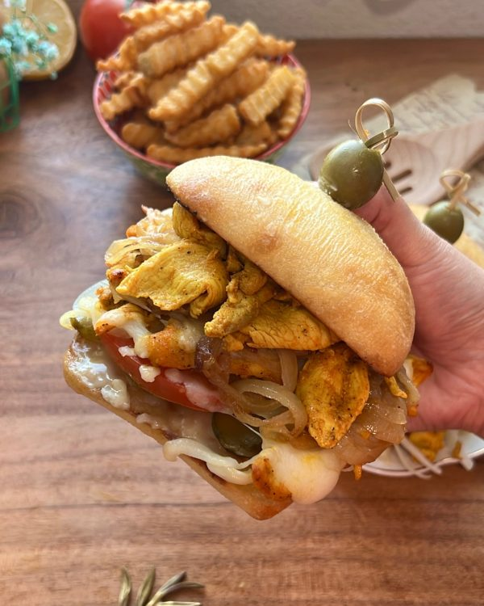

Chicken Shawarma Melt

A mouth-watering sandwich made with tender, seasoned chicken, creamy
garlic sauce, melted cheese, and fresh vegetables, all nestled inside a
ciabatta roll.
Today we’re making a Chicken Shawarma Melt! A flavorful sandwich that
features succulent chicken pieces with a hint of spice, creamy garlic sauce,
and melted cheese, all piled on top of ciabatta bread. This hearty sandwich is
perfect for lunch or dinner, and the combination of flavors and textures is sure
to satisfy your taste buds.
INGREDIENTS
- 5 lbs Chicken half chicken thighs, half chicken breast (thinly sliced)
Marinade:
- 1 1/2 heaping tsp Paprika
- 1 1/2 leveled tsp Salt
- 1 heaping tsp Black pepper
- 1 heaping tsp Turmeric
- 1/2 heaping tsp Cinnamon
- 2 tbsp Hot sauce of you choosing (I used franks red hot "cayenne")
- 1/4 cup Vegetable oil
- 1 cup Vinegar
Build your sandwich with:
- Garlic sauce
- Pickles
- Sliced tomatoes
- Sliced raw onion
- Mozzarella cheese
- Caramelized onions/or grilled onions optional
- Ciabatta rolls
INSTRUCTIONS
- Cut your chicken into very thin strips.
- In a large bowl, combine the chicken strips with the paprika, salt,
turmeric, cinnamon, black pepper, hot sauce, olive oil, and vinegar. Stir
well to coat the chicken evenly. Cover the bowl with plastic wrap and
let marinate in the refrigerator for at least 4 hours or overnight for
best results.
- Preheat a large skillet over medium-high heat. Add the marinated
chicken strips to the skillet and cook for about 7-10 minutes, stirring
occasionally, until the chicken is cooked through and lightly browned.
While cooking the chicken, you may notice a significant amount of
liquid in the pan. Instead of draining it, it’s important to keep it in as it
contains a lot of flavor. Continue cooking the chicken until all the liquid
has evaporated, allowing the flavors to fully develop and intensify.
- While the chicken is cooking, slice the ciabatta rolls in half and spread a
generous layer mayonnaise on each half. Place the rolls on a separate
pan on medium heat until they are lightly toasted and the mayo has
turned golden brown.
- Add a layer of garlic sauce, place a few slices of pickles on one half of
the roll, followed by sliced tomatoes and raw onion.
- Add a generous amount of cooked chicken strips on top of the
vegetables, then sprinkle some mozzarella cheese on top.
- Place the baking sheet with the sandwiches back under the broiler and
allow the cheese to melt and become bubbly, usually around 1-2
minutes.
- If using, add some caramelized onions on top of the cheese.
- Remove the baking sheet from the oven and place the top half of the
roll on the sandwich.
- And you're done !! If you end up having any left-over chicken, it is
perfect for meal prep throughout the week!